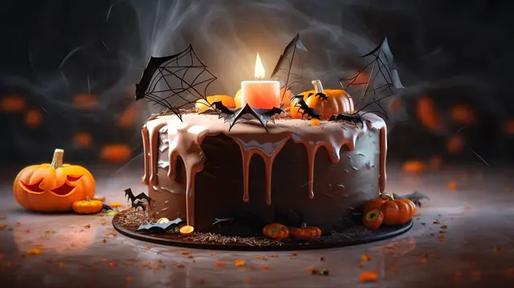

Receita Assombrada: Bolo de Morcego da Bruxa Morgana
Uma delícia macabra para assustar (e adoçar) seus convidados!
Em uma noite de lua cheia, a bruxa Morgana decidiu compartilhar sua receita secreta de bolo de morcego. Prepare-se para uma mistura de sabores sinistros, poções doces e muito mistério!
>
Ingredientes:
- 2 xícara de açúcar encantado
- 3 colheres de pó de teia de aranha cacau
- 1 colher de chá de fermento em pó venenoso
- 1 xícara de leite de vaca fantasma
- 1/2 xícara de óleo vegetal
- 2 ovos de corvo preto
- 1 colher de chá de essência de baunilha de poeira lunar
- 200g de chocolate das sombras
- 1/2 xícara de água fervente de poço dos desejos
Instruções:
- Pré-aqueça o forno a 180°C (350°F) e junte uma forma de bolo com manteiga de abóbora.
- Em um caldeirão grande, misture o açúcar encantado, o pó de teia de aranha cacau e o fermento em pó venenoso.
- Adicione o leite de vaca fantasma, o óleo vegetal, os ovos de corvo preto e a essência de baunilha de poeira lunar. Misture bem até obter uma massa homogênea.
- Derreta o chocolate das sombras em banho-maria e adicione à massa.
- Incorpore a água fervente de poço dos desejos lentamente, mexendo até que a massa fique lisa e brilhante.
- Despeje a massa na forma preparada e leve ao forno por cerca de 35-40 minutos, ou até que um palito inserido no centro saia limpo.
- Deixe o bolo esfriar antes de desenformar e decorar com teias de açúcar ou olhos de gelatina para um toque extra assustador!

Dicas da Bruxa Morgana:
- Para um sabor ainda mais tenebroso, adicione uma pitada de canela em pó de morcego à massa.
- Sirva com uma cobertura de chantilly de nuvem ou calda de sangue de dragão para impressionar seus convidados.
- Não se esqueça de usar uma varinha mágica para misturar os ingredientes – isso garante um toque especial!
Agora você está pronto para preparar o Bolo de Morcego da Bruxa Morgana e encantar (ou assustar) todos na sua festa de Halloween! Muhahaha!!
© Do mago Ysak, feliz dias das bruxas!